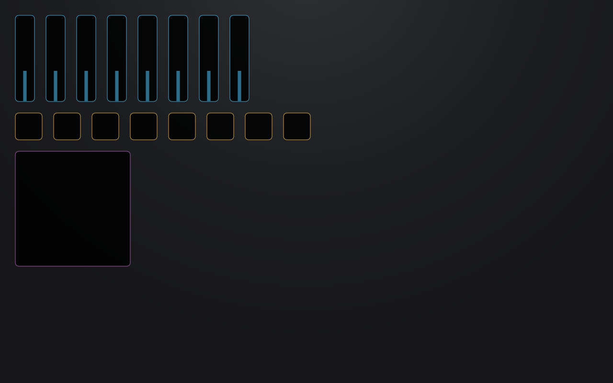

Drafts1

Favorites2
Eight channel mixer
Drafted by GitHub Copilot, 5 minutes ago
You asked: Faders and pan knobs for my eight synth channels, and something for the filter.
What it sends
8
Faders send controller 7 (volume) on channels 1 to 8.
8
Knobs send controller 10 (pan) on channels 1 to 8.
1
XY pad sends controller 74 across and 71 up, on channel 1.
Everything goes to Synth, which is the Default Basic App Loopback on this PC.
Checks
Nothing is sent until you run it.
No system exclusive in this layout.
Every control is on the page.
Open in editor
Keep
Discard